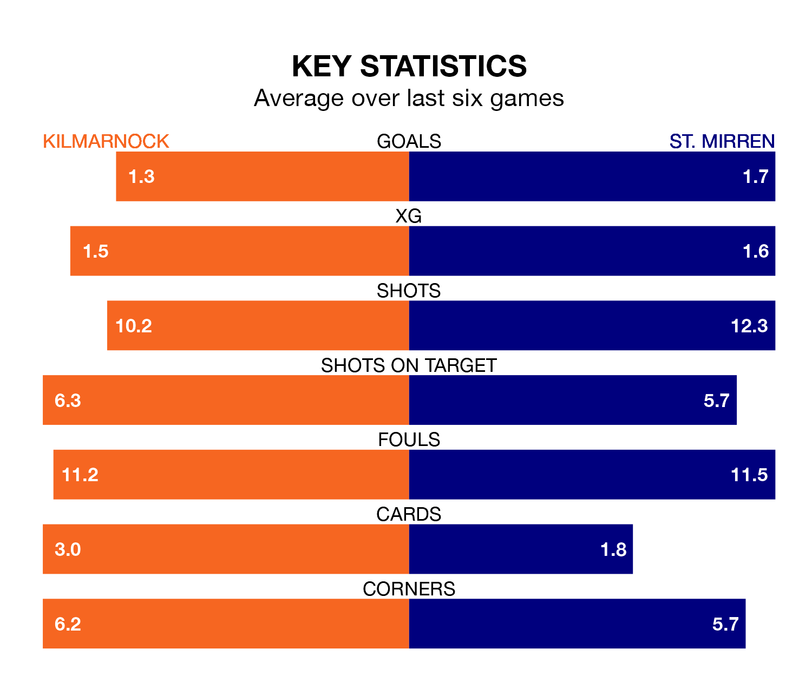

Kilmarnock host St. Mirren on Saturday at the BBSP Stadium Rugby Park in the Premiership.
In their last league match, on March 2, Kilmarnock drew with Dundee 2-2 away, with goals from Marley Watkins and Robbie Deas.
St. Mirren won, 2-1 at home against Aberdeen, with Mark O'Hara and Toyosi Olusanya on the scoresheet.
In the last 10 years, Kilmarnock and St. Mirren have played each other on 21 occasions. Kilmarnock won 11 of them, St. Mirren three, and they drew seven times.
On average, Killies scored 1.2 goals and the Buddies 0.9 in those matches.
Their last meeting was on December 27, when Kilmarnock won 1-0 away.
Kilmarnock's Danny Armstrong is the league's most creative player, racking up nine assists in 29 appearances so far this season.
For St. Mirren, Scott Tanser has set up the most goals, having laid on four assists in 29 games.
With 34 goals in 29 games so far this season, Killies are scoring at below the league average rate with 1.2 goals per game. But they are conceding fewer than average too, letting in 31 goals at a rate of 1.1 per game.
The Buddies are also below average scorers, with 1.2 goals per game, compared to a league average of 1.3. They have conceded 1.1 goals per game.
The visitors are fourth in the table after 29 games, of which they have won 12 and drawn six, earning 42 points.
The home team are one place behind St. Mirren in fifth, with 10 wins and 11 draws putting them on 41 points.
Kilmarnock are in mixed form in the Premiership, with two wins and three draws from their last six games.
With four wins and a draw over that period, St. Mirren's form is better – they have taken 13 points from 18, compared to Kilmarnock's nine.
Updated: 09:34 (UTC), 08/03/24